Background
Badges of Honor is a whimsical and fun third person shooter and puzzle game. The player assumes the role of Casey, a dedicated young guppie scout who wakes up to find his troop’s camp robbed of their main source of revenue, cookies, by the rival camp across the lake. The overarching story of the game calls on the player to navigate the map and its myriad challenges in order to retrieve the stolen goods. The player will traverse through outdoor challenges in a 3D world as they gain badges and shoot off rival scouts with their handy makeshift weapons. The game captures the mischievousness of child’s play while incorporating intriguing challenges and dark humor to conquer the wild and become the hero of your troop. The player’s main source of conflict is both the rival scouts and with themselves as they craft creative solutions to their obstacles.
I worked on this game as the AI, level, and mechanics designer in my last semester in college. The following the GDD write up of the work we did.
- Game Overview
- Branding
- Mechanics
- AI
- Game Elements
- Story Telling Elements
- Prototyping & Playtesting
- Sample Level
Game Summary
Badges of Honor is a whimsical, entertaining game for all ages. We developed this game with a younger target audience in mind, but we never forgot over the course of development that we wanted to make a game that we ourselves wanted to play as well. With this thought, we created a fun and witty game that allows our younger audience to experience what it is like to assume the role of a Guppy Scout and gives a sense of nostalgia to our older audience, many of which attended camp when they were younger.
We set out to create a world that resembles what it is like to attend a camp in real life but with aspects that strongly appeal to both our older and younger audiences alike, and convey the whimsical humor in our game. For example, we created several different camps that players can explore while on their adventure, such as: Camp Shh!(a camp reminiscent of Area 51) and Camp Sagslow (a nudist-esque camp). While the camp’s names definitely appeal to an older audience, the silly nature that appeals to kids is expressed in the environment like coming across an embarrassed, naked man (of course nothing shows!)
As the name implies, there is a badge system. We felt that it was pivotal to place these badges in two distinct categories: primary and secondary. Primary badges are awarded to players when they have completed a task that relates heavily to the main story objective. These primary badges will award players with certain abilities or items that are needed in later game content. The secondary badges, while not needed to complete the story, are introduced into the game for players that like to drift off from the main story objective on occasions and explore the game world. To encourage players to pursue such badges, achievements and occasionally additional stats will be given. However, these items are more “for show” and allow a player to present their dominance over the rest of the community.
To keep with the camp theme of the game, we decided to make exploration and crafting core game mechanics (because what scout doesn’t like to explore or build things?). To initiate these mechanics, players are given a scout’s survival guide as soon as they are placed in the game world, but with a catch; there are missing pages! The pages that still remain in the survival guide, offer blueprints to players on how to craft pertinent, useful, and downright silly contraptions. As players set out on their journey to enact sweet revenge, they are encouraged to find various camps, caves, and treehouses which offer the possibility of providing the missing pages to their survival guide and the items necessary to craft some of these magnificent contraptions.
As we continued development, the idea of gun customization arose and presented itself as a novel way of creating many different guns out of a single gun. The idea is that as players explore the game world, they are able to interact and pick-up many different types of items around the map. These items are then stored in an inventory system where players can later add anything and everything to their marshmallow gun, giving them the option to aesthetically customize their weapon or customize it for maximum destruction to bring sweet, gooey justice to all who oppose! We simulated this feature of our game in our playtesting sessions and found that players very much enjoyed not being stuck with a stock gun and being able to customize their weapons to really make it their own.
Overall, Badges of Honor is a game that we are extremely proud to have developed. It immerses players in the game world, hinting a sense of nostalgia for those that were scouts in the past. However this time, players assume the role of Casey and use gadgets, gizmos, and (of course) their handy marshmallow gun to fight their way to the thieving girl scouts, and reclaim what is theirs! All the details of our extraordinary game are laid out in this document.
Are you ready to earn your badges?
Log Line:
A plucky young scout exacts sweet, marshmallowy vengeance on a thieving troop across the lake.
Razor Statement:
Badges of Honor is an entertaining third person shooter-puzzle game in which you assume the role of a young scout seeking revenge on the thieving girl scouts next-camp over.
Focus:
Badges of Honor is a whimsical and fun first person shooter and puzzle game. The player assumes the role of Casey, a dedicated young scout who wakes up to find his troop’s camp robbed of their main source of revenue, cookies, by the rival camp across the lake. The player will traverse through outdoor challenges in a 3D world as they gain badges and shoot off rival scouts with their handy marshmallow gun. The game captures the mischievousness of child’s play while incorporating challenging puzzles and dark humor to conquer the wild and become the hero of your troop. The player’s main source of conflict is both the rival scouts and with themselves as they craft creative solutions to their obstacles.
Audience
Badges of Honor appeals to both juvenile audiences as well as mature; the humor will be dark but also silly and wacky. Full gameplay can be accomplished with the use of an Xbox One or PS4 controller, focusing mostly on the sticks, buttons, and triggers; controls would be transferable for keyboards because this game will also be available on streaming services such as Steam. The game will begin with a simple training module teaching the player how to aim, shoot, and craft in order to score points and earn badges to proceed. The player can successfully finish the game with the default weapon and character settings. Players who have higher skill level who wish to push the game further are able to beat the game on the first pass to unlock multiplayer as well as the option to play as the enemy. In addition to the bonuses revealed after the first run through, players can also complete side quests in order to increase their badge count, discover NPCs (such as the Yeti), and customize their character.
Tone Words:
Fast-paced, mischievous, creative, wacky, colorful, kid-friendly, nostalgic, comical
Visual Synopsis
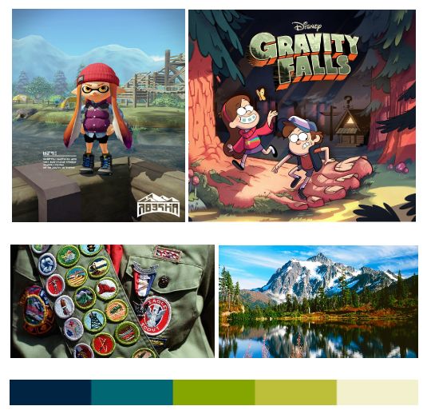 The mood board reflects a focus on whimsical, bright colors and woodsy settings. Inspirations include games such as Splatoon and cartoons like Gravity Falls. Characters demonstrate an exaggerated, playful style.
Game Mechanics
Badges of Honor will mainly feature third-person shooting combat which is enriched with a crafting feature. The camera will be focused closely behind the main protagonist, Casey, and will close in to an over-the-shoulder angle when the player is aiming. It will feature replayable levels/quests and a direct plot to finish the game. The levels will be cleared upon completion of defeating all the rival girl scouts and other enemies in the areas as well as by completing active objectives. The replayable levels will contain objectives and treasure that are unlockable at higher levels which will be achieved later in the game. These hidden treasures and side missions are not necessary for the player to reach and finish the first run through of the game. After the first run through, the player will unlock multiplayer. The world will feature other camps the player can interact with and will be full of side quests in order to unlock more bonuses which include but are not limited to: the ability to talk to animals, a Go Kart crafting schematic, and novelty marshmallow shooters. The game will also feature a crafting interface in which players are encouraged to experiment with any items they find in the world to create things like enhanced weapons, food for health, and general objects to complete missions (fires, keys, etc).
Gameplay Model
Badges of Honor is primarily a single player game. Once the player goes through their first run through of the game, they are able to unlock multiplayer. The multiplayer part of the game will focus on small mini-games in which players can either team up or compete in challenges such as King of the Hill, Dodgeball, and Paintball-esq combat with their crafted weapons. This will play very similar to the way in which the player will battle enemies in single player, except with different objectives.
Shooter Weapon Mechanics
The main weapon is a marshmallow gun; it works by automatically focusing. The gun will focus on the closest enemy while aiming and then the player will be able to push the right analog stick to further aim at certain parts of enemy bodies. There will also be an option in the settings that allows the player to disable the auto-aim feature completely. The base gun will be given to the player around the start of the game alongside a brief tutorial. This gun will be customizable as the player reaches higher levels with more experience. The player will be able to add things and build on top to create a wildly ridiculous weapon that creates more competitiveness while also being whimsical. The player can also sacrifice optimization for visual customization if they do so wish; the sky is the limit.
Items that can be added are (some can also be used individually such as slingshot & sticky grenades):
- Slingshots, jacks, Slinkies, boomerangs
- Jaw breakers, licorice, marshmallow grenade, other candy items
- Bow & arrow
Inventory Mockups
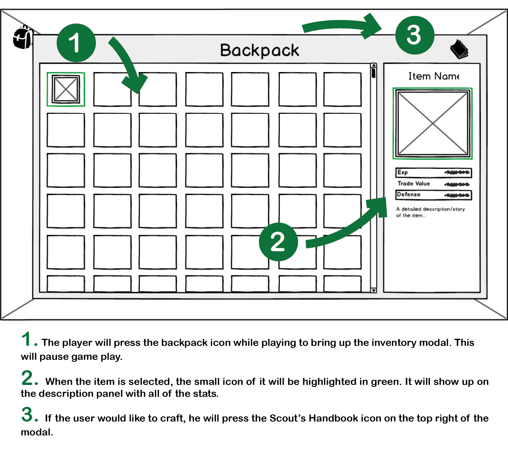
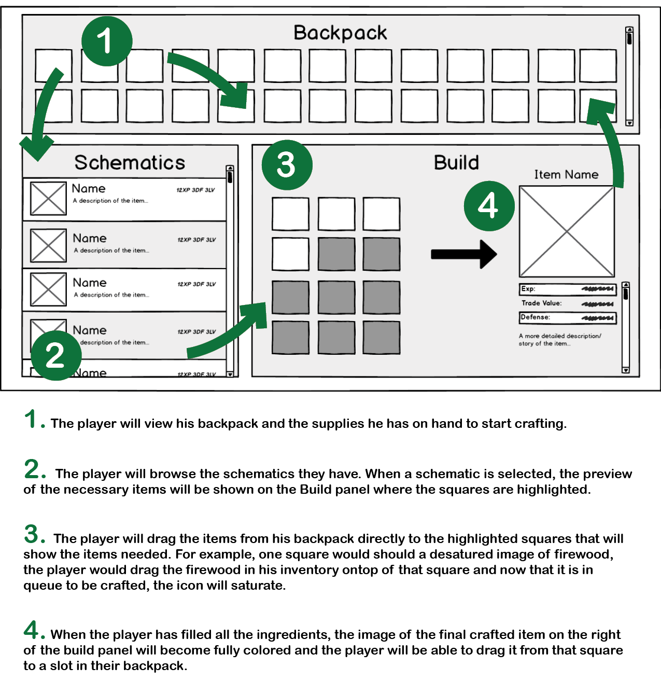
Health Bar Mockups
Health bar designs vary based on the character. Each takes on an imaginative shape that reflects individual characteristics and personalities (i.e.: woodland creatures have acorns or leaves, the main character has a chocolate bar).
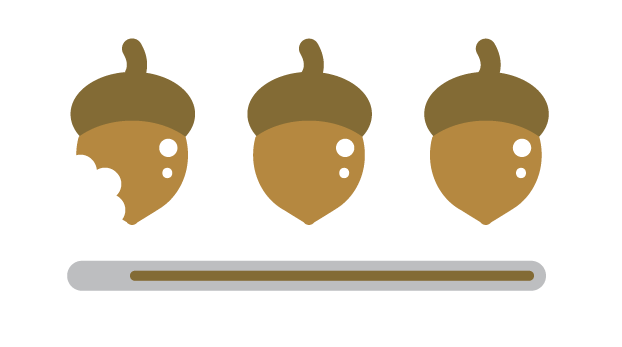
Controller Diagram
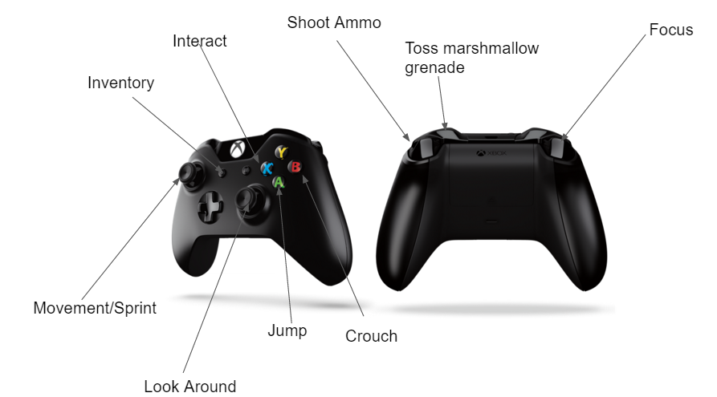
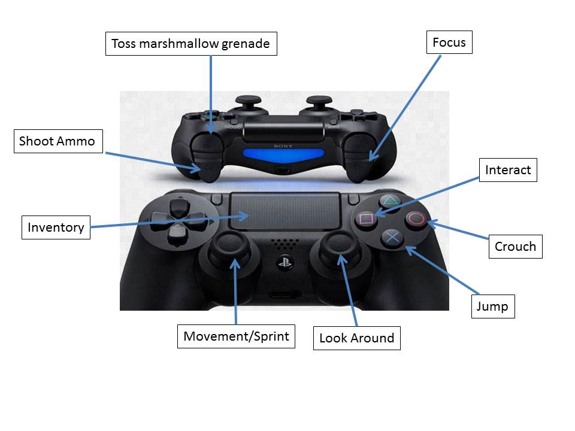
Keyboard Diagram
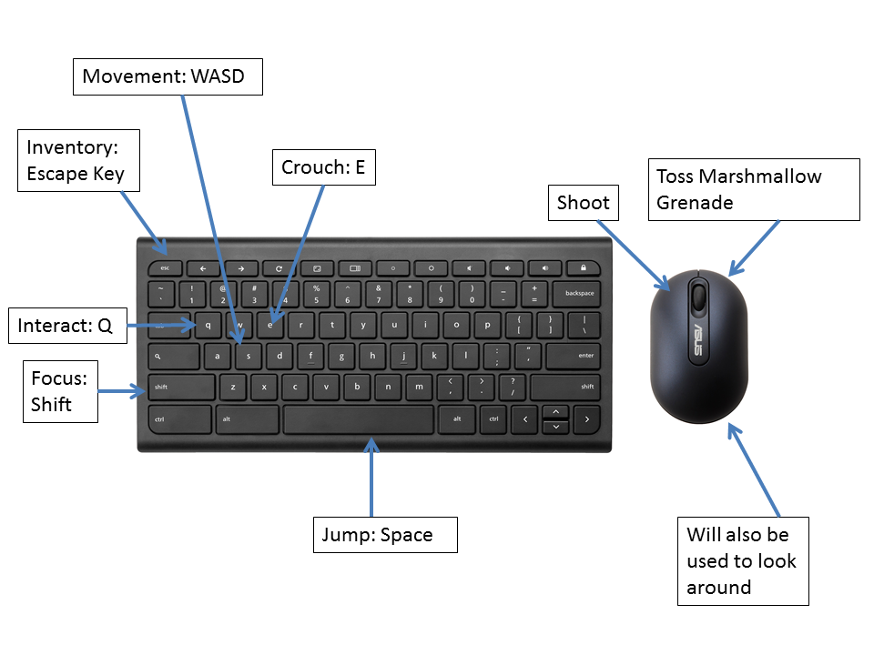
AI
Enemy AI
The main source of enemies in this game will be the rival girl scouts in the woods. A secondary source of enemies will be unfriendly forest dwellers that will be related to the nearest area in the game (rabid radioactive squirrels, piranhas in the lagoon, etc). The enemy AI thusly will be different for the two classification of enemies.
Rival Scouts
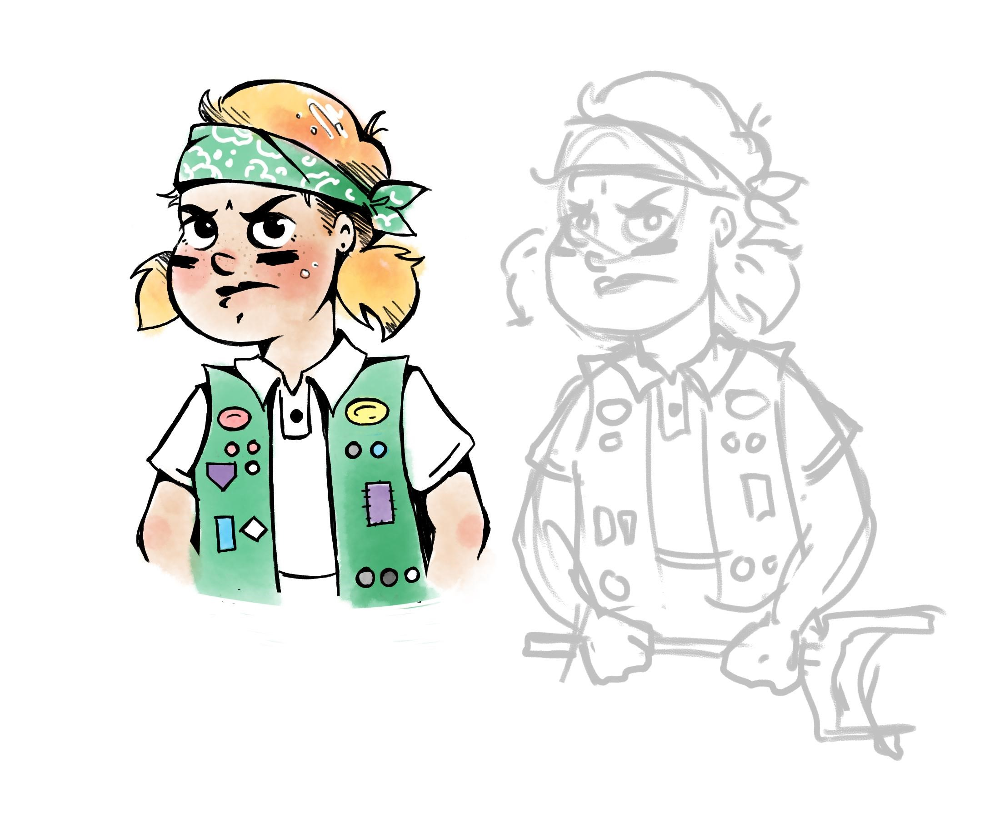
These girl scouts will feature different weapons, ranging in difficulty, based on how far the player gets in the map. There will be a range of these weapons from things like jacks, throwing ninja-style esque playing cards, circus peanut shooters, sling-shots, and lanyard whips. During combat they will have pre-scripted lines to say but it will be vast and dependent on the location, their level, their weapon, and what activity they were previously doing (canoeing, eating, etc). If the player and the enemy AI have the same level and damage capability on the weapon, the player can take out that enemy with 3 clear shots on the basic model marshmallow gun. When the enemy AI is hit, you will see the chocolate bar meter above their head get lower. When the enemy is defeated and the chocolate bar meter is empty, they faint and fade away from the environment after a grace period of 5 second in which the player can do no more damage. When the enemy AI faints, they will say a line which serves as an audio cue that that enemy has been defeated. The enemy AI as well as the player will be able to utilize the pre-planned out map and the elements (bushes, trees, rocks) to hide from the fire. Higher level enemies, such as level bosses, will be able to regain health by eating their extra chocolate bars.
These girl scouts will feature different weapons, ranging in difficulty, based on how far the player gets in the map. The AI will be able to hide in the trees as well as be in plain sight. The AI will always have around the same level as the player as long as the player has not trespassed into harder areas in the map against the pathfinding AI. The AI will be as intelligent as the player. The AI will mimic randomness in their activities. Potential elements of reality include:
- Enemies sitting in a circle singing songs
- Sitting down and eating some stolen cookie loot
- Training with their weapon on a fake shooting range
- Stalking the player from their treehouse
- Canoeing on the lake
- Enemies will also be attacked my unfriendly forest dwellers. Plays may encounter rival scout enemies being chased down by a squirrel or up a tree by an angry deer.
Rival Scouts: will have varying pathfinding skills depending on what their pre-defined activity is. The player will be able to run faster than the rival scouts. There will be more opportunities to hide behind environmental features than the rival scouts will utilize, making them easier targets.
Unfriendly Forest Dwellers
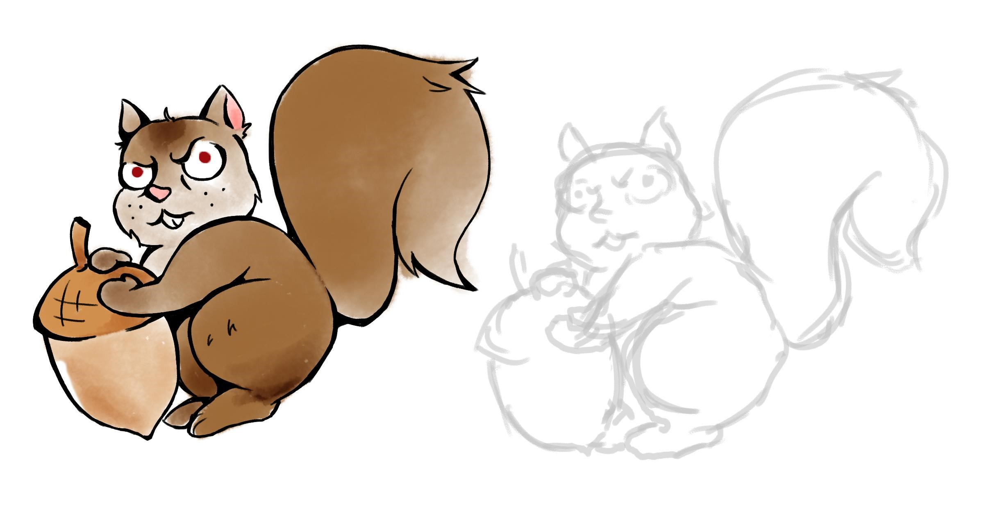
These enemies will all have unique combat moves. The enemies will mostly fight with their bodies (teeth, claws, tail whacking). Both the player and the enemy AI will be able to fight back attacks from these enemies, allowing also for brief moments of teamwork between the girl scouts and the player. Since these forest dwellers will be harder enemies, if the player and the enemy have the same level and do the same damage, it will take 5 clear shots from the basic marshmallow gun to defeat it. The forest enemy’s health bar will be a meter of acorns or whatever appropriate food they eat. The same process will occur when this enemy is defeated; they will faint and fade from the environment. If the forest dweller the enemy is fighting happens to be human or have the ability to talk then there will be lines they say during the encounter and all dwellers, regardless if they have lines, will let out a noise to signify to the player that they have been defeated. The player will be able to utilize the environment to either run away from the animal to end the combat interface or hide to regain health or reload their weapon. These enemies will not be able to heal themselves.
These enemies will be a bit higher difficulty level as the corresponding rival scouts in the area. These enemies will be more scarce and will randomly be provoked by the player’s or a rival scout’s presence or by an interaction (stepping on it’s nest, disturbing the silence, etc). The activation of these enemies will be random which will add to the serendipity of the combat. The non-novelty dwellers (common bears, piranhas, etc) will behave as the friendly animals in the area to create more suspense. Potential states for them be in are as follows:
- In their nests, trees, or water
- Grooming themselves
- Eating
- k. If the enemy has a novelty element about them (such as the rabid squirrels from the radioactive area) they will act out on that. For example, those squirrels will be foaming at the mouth, running into trees, and harassing other AI in the area.
These enemies will have stronger path finding skills and depending on their level, the enemies might be able to run faster than the player. They will not hide behind environmental elements during combat.
Story AI
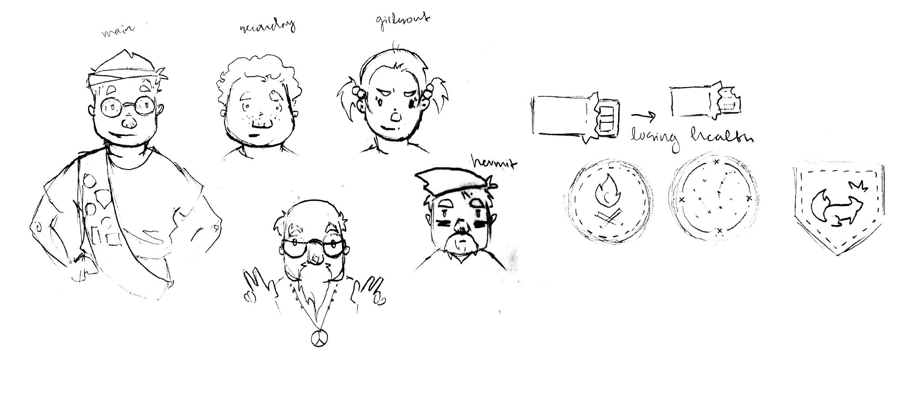
The story and goals will be told and updated through three main sources: friendly NPCs, level bosses, and the lost pages of the Scout Guide.
NPCs
The player will encounter different friendly camps in each level. Some of these will be the nudist camp, the camp for wayward children, and the haunted camp. One of the most important will be Caleb, the sole survivor of the haunted camp. A wise sage, he is the oldest living member of the forest with a wealth of knowledge for the player. He will play the largest part in teaching the lore/history of the forest and the art of combat/crafting to the player in the first lower-level half. His boyfriend, the Yeti in the mountains, will also help move the plot along in the later half of the story when the player is higher level.
Scout Survival Guide
When the player leaves Caleb’s level, he will be gifted with the Survival Guide. This guide will act as a communication between Caleb and the player. The plot will move along as the player clears areas of the game and finds the lost pages of the guide. This will provide information on how to infiltrate the rival camp as well as the history/lore/and plants seeds for side quests on other parts of the map. This survival guide will also store the crafting schematics the player earns.
Level Bosses
In each level there will be several pockets of enemies in a level range area. The player will beat one highest leveled boss in each level range. When the boss is defeated, she will either surrender and spill the beans on some knowledge of the who/what/where/when/why of the cookie thievery or she will drop important milestone pages of the survival guide.
AI Needs
The AI for the environments will need algorithms to determine the weather. The AI needs environmental gradients as well as music/ambient noise for cues. The enemy AI will need sufficient space away from the player and will need pre-set activities to enhance the reality of their activities. They need pre-scripted lines to indicate: their activities, they’ve been hurt, they’ve hurt you, and they’ve been defeated or they’ve defeated you.
Core Game Elements
Crafting
Throughout Badges of Honor, players will be encouraged to craft various items that can either be imperative to gameplay or for just plain fun. Around the time that the player first enters the game world, an NPC will provide them with a scout’s survival guide before they truly set out on their journey. This survival guide not only includes knowledge of each individual camp that players can encounter while exploring the game world, but it also provides players with blueprints to craftable items needed in later game content and items that are just silly and fun.
However, all great things come with a catch. While players are given this wonderful tool, there are pages missing and it is the player’s job to find the missing pages--as they contain knowledge of how to build important items. All the various camps around the map have blueprints hidden within them. Once a player finds a blueprint, they will be able to read about the item and why the camp that they found the blueprint in needed such an item to survive in that unique environment. Furthermore, once a player obtains a blueprint it does not necessarily mean that they will be able to craft that item. Each contraption requires several different items to build, all of which can be found around the map. For example, the campers in Camp Sagslow traveled around the forest by means of a grapple in the form of a YO-YO and they left their blueprint behind for others to find.
The YO-YO is an example of an item that players are forced to find, as it is needed for later game content. Because this craftable item is needed for the game, players are continuously led in the direction of the blueprint until they find it. Other blueprints, however, such as a go-kart that allows players to travel in the woods far quicker, are not a necessary tool in the game and therefore players are not given hints as to where these blueprints can be found; instead it is left to the explorers.
Gun Customization:
A wonderful tool that will be implemented into our game is gun customization. Similar to Spore where players have the full artistic control over their characters, so too will players have full control over their in-game weapons. Players will begin Badges of Honor with their standard, measly slingshot. While still a very useful tool, it is not the best combat weapon. Very shortly into the game, the player will be given a marshmallow gun. As they progress through the game world, they are given the opportunity to scavenge items during their exploration. These items are stored in an in-game inventory system, the same one used for crafting. Players are then able to attach all items to their weapons for both aesthetics and functionality. As we showed in our playtesting session, players were very resourceful and added such things as barrels, stocks, foregrips, sights, paint, stickers, writing, and drawings. Each customization is unique, and makes the weapon more of the player’s own gun instead of just a standard stock gun given to the player by the game’s creators. Players can create wild and lavish weapons that look great and perform in the same manner.
One restriction that we do place on this customization process is the performance of the gun. For obvious reasons, players should not be able to continuously add improvements to their gun such that the game is no longer fair or fun. Therefore there will be a sort of tradeoff system in place. For example, if a player wants to add a CO2 cartridge to their weapon to increase the damage of each marshmallow, they can gladly do so by sacrificing another trait of their gun such as accuracy. While it may at first seem that we are hindering a player’s ability for free customization, we most definitely are not. Players will still be able to add additional barrels or CO2 cartridges if they so desire, but they will serve only an aesthetic
Badges
In Badges of Honor players are presented with a unique achievement system, (you guessed it!) badges! As players complete both necessary and optional tasks they may be rewarded with various types of badges that are collected on the player’s sash and shown in-game. Like how some items have to be crafted to progress through the game, some badges will need to be earned to progress through the game as well. These badges are referred to as the primary badges, and all others are secondary badges.
Primary badges are collected by completing various tasks and quests assigned to them by various NPCs. In many cases, a string of quests will have to be completed for a player to earn a certain badge. In other scenarios however, only one quest may need to be completed to earn a badge. Primary badges come with very unique abilities that players will have to harness for later game content. Such badges include:
- Wildman Badge - Gain the ability to talk to animals, friendly and unfriendly
- Got Your Gills Badge - Gain the ability to swim and travel underwater
- Take Flight Badge - Gain the ability to glide like a squirrel from treetop to treetop
- Making Molehills Badge - Gain the ability to burrow underground to sneak up on enemies
Secondary badges may be rewarded to players when they have completed various tasks that do not directly correlate to the main story path of the game. These badges will be rewarded for exploration, collecting an abundance of supplies from around the world, crafting a large number of items, completing various puzzles around the map, and being a sharpshooter, to list a few. Unlike the primary badges, where each badge comes with a special ability only a select few secondary badges will come with abilities or upgrades, the majority of these badges are a bragging right for players. The abilities that may accompany these secondary badges however, are improved accuracy, damage, and speed. Multiple badges may improve the same ability, so if a player collects all such badges they can greatly improve an attribute to their character. Such badges include:
- Splat! Badge - Caused a marshmallow to splatter on an enemy 20 times
- I Need It! Badge - Filled up the inventory 100%
Puzzles
As players progress through the game world, they will often be presented with obstacles that can only be surpassed by solving a puzzle. All puzzles will consist of basic building blocks arranged into various combinations that can create many different puzzle. These basic building blocks are pressure switches, grapple hooks, timed doors, and light-up tiles. Below a sample puzzle is explained.
Example puzzle: A player comes to a corridor inside one of the camps and notices that in order to open the door on the other side of the room, he must stand on the pressure switch in the center of the corridor. As he begins to walk towards the pressure switch, he notices that the tile below him lights up. He continues to walk straight towards the pressure switch, but when he stand on it the door does not open, so he goes back to the beginning of the room to rethink things through and as he does so the tiles that he previously stepped on that were lit up now turn off. He thinks and realizes that every single tile in the corridor must be lit up for the pressure switch to work. Now he must figure out a way to step on every single tile and end at the pressure switch without ever stepping on the same tile twice, because this would turn off that tile. An example is provided below
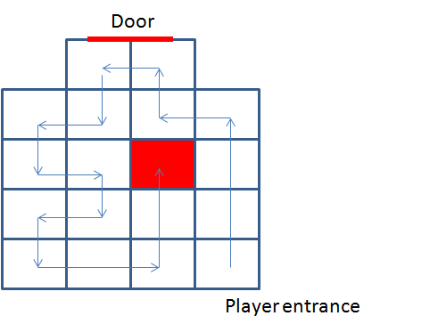
Storytelling Elements
As stated earlier, this game can be beaten as a straight shot from home base if the player follow the pathfinding cues. These cues will be both visual, audio, and physical.
Story Visual Cues
Although the map is open world and the player is free to roam wherever they please, the map will have unexplored areas covered in mist. The path through the areas en route to finish the game will be cleared as the plot develops. The player will know when they are leaving their level as the environment begins to change to fit the next level’s theme, such as, grass color, sky color, tree type, and forest animal type, via environmental gradient. When the player enters in an area with a level significantly lower than the enemies, they will be more likely to be attacked by an enemy. If the enemy is defeated in an area not correlated with their level range, they will be ‘knocked out’ and wake up in an area that corresponds with their level range. If the player is on the higher edge of their range, ready to level up, they will be placed in the next highest-level range area
Story Audio Cues:
The player will know when they’re going against the current plot (moving against the current quest goals/level clearing) when the music begins to soften. The ambient noises of animals, wind, and leaves will soften. When the level is cleared by the player this feature will be deactivated and they can freely roam through cleared levels to find the bonuses and unlock more upgrades. This audio cue will be activated for side quests as well as the overarching journey to the other side of the lagoon.
Story Physical Cues
The player will be encouraged to follow a specific path as some areas of the game will be blocked by physical elements. This type of leading will be heavily utilized for the replayable level goodies. For example, the player won’t be able to access treehouses until they complete the fifth level/camp and get a hook shot schematic; there will still be hidden treehouses from level/camp 1-4 that are too high for player to reach without the hook shot. This will also be used to keep players from certain death (to reach the level boss, they need a key; a corral of angry miniature ponies will be unleashed only if the player opens the gate and must fight them for the key).
Characters
Throughout the game, the player will come across both friend and foe. The more side quests the player chooses to do, the more allies the player will have by the end of the game. Gaining more allies is not necessary but it is a great positive to enhancing the gameplay, as these allies can help the player in a variety of ways. A few of the main characters in the game are:
- Casey - The main protagonist of Badges of Honor. He is the character that the player takes control of and when we meet him, he isn’t the strongest nor the brightest scout but he definitely has the determination to right what has so tragically been wronged. Although at first very hesitant to take control of the situation, Casey is molded into a very capable and honorable scout.
- Caleb (Wildman) - Caleb was once a scout just like Casey: small, weak, inexperienced, and facing a task that was much larger than he could conquer alone. Unlike Casey, Caleb did not have the help he needed to restore honor and peace of mind to his camp. And so, his shame and defeat caused him to flee from his camp and wander the woods for decades, learning by personal experience the way of the woods. After meeting our protagonist, Caleb is not so willing to let him meet the same unfortunate fate.
- Yeti - On again/off again love interest of Caleb, the Yeti takes a liking to Casey early on. His strength is unmatched and so are his emotions.
- Sindee - The evil camp counselor in charge of the troupe that stole the goodies from the Guppy Scouts. Seemingly sweet and friendly on the outside, she harnesses a burning hatred for all things outside of her camp. She has brainwashed her scouts into feeling the exact same way that she does about other scouts and the forest dwellers. The player finds out later in the game that she was a scout at the same camp as Caleb when they were younger.
Locations/Camps
On the way to the rival camp, there will be many opportunities for the player to explore various other camps and areas. As stated before, there will be a potential for every new area to have hidden schematics, weapon attachments, etc. Here are a few of the areas to be explored:
- Camp Wonashuqhaklam - This is Casey’s camp. When the game begins, Casey awakens from a nightmare in a cabin located here.
- Camp Creep - The first camp that the player comes across after Casey’s own camp. This is where the player will first encounter Caleb, who has made this his home for quite some time now.
- Camp Shh! - A camp reminiscent of Area 51. This has been a location of extensive radioactive materials testing over the years. It is surrounded by very tall fencing, which the player will have to find a way through in order to get inside. Upon entering, the player will only encounter mannequins. As the player explores, they will notice that mannequins will change their position when the player isn’t looking. The player will learn that the testing not only gave the mannequins the ability to move around but also the ability to communicate with other beings telepathically.
- Camp Sagslow - A nudist colony in which everyone but Casey is comfortable with this kind of “freedom.”
- Camp for Wayward Children - Eat...sleep...repeat. In this camp, all the adults seem to be “normal” people but upon meeting the children, Casey has a bad feeling about what’s going on here. All the children have blank, expressionless faces and when the player attempts to interact with them, they all have very standard responses that rarely differ from one to another. Once the player begins to investigate, we learn of the true brainwashing horrors of this camp.
- Mountain Top Cave - ome of the Yeti. This location is surrounded by numerous red flags that alert the player of the danger within, but if the player chooses to enter they will be greeted by the lovable Yeti.
Prototyping and Playtesting
We wanted to gauge from our target audience (age 7-26) how they engaged creating weapons, the potential for group work in the game, and how important customization of the marshmallow shooter was to them.
Survey
We recruited a diverse player range, intended to reflect the scope of the audience
- 6 females
- 3 less then 10 years old
- 3 between the ages of 18-25
- 3 males
- 1 less then 10 years old
- 1 between the ages of 10-18
- 1 between the ages of 18-25
The moderators of the play session were asked to fill out forms for all the participants as well as fill out an observation sheet for themself. Players were given a base marshmallow shooter made out of PVC, operational by blowing into the tube. The testers were given: rubber bands, pipe cleaners, extra PVC, paper towel tubes, and stickers.
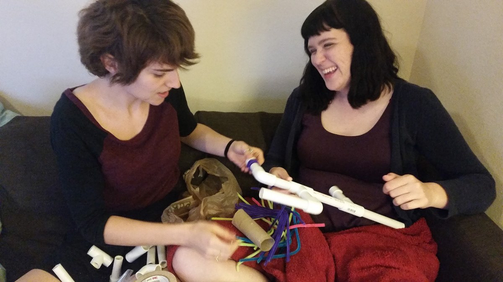
Results
We were delighted to see all the creations the testers came up with, some we couldn't even predict. We realized that the players got tired of reloading and crafted interesting ways around it. They also created interesting ways of maximizing their ammo load and added as many barrels as they could.
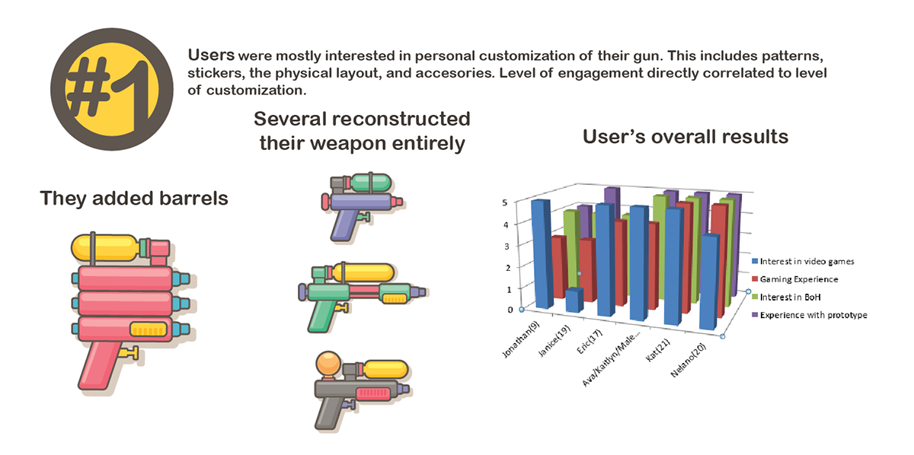
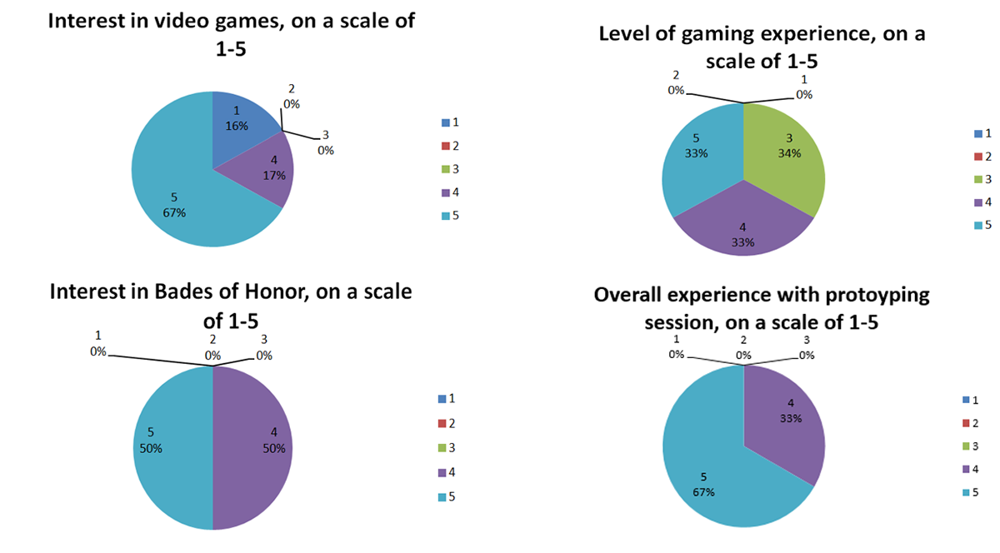
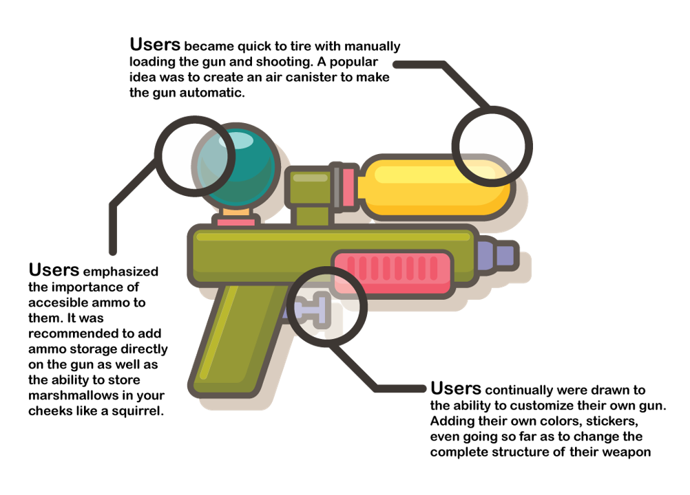
Sample Level
As the player first enters the game, a cutscene is shown…
The camera pans over Camp Wonashuqhaklam, it is dark and all of the Guppy Scouts are asleep. After a brief fly over of the camp, the camera begins to focus on one of the camper’s cabins.
The door opens and as players begin to see the inside of the room, they can see the camper’s sleeping in their bunks and hear groans and tossing and turning coming from one of the beds. The camera slowly approaches this disgruntled camper, and as the player gets closer he can see that this child is having a terrifying nightmare
The camera focuses on this terrified scout for a while longer then enters his mind, so as the player can see what he is dreaming.
In this nightmare the player now sees through the eyes of this scout, Casey. Casey awakes in a cold sweat and hears grumbling outside of his cabin. He turns to his bunk mates and tries to wake them, but no one awakes. The grumbling gets louder, and he begins to hear scratches on the roof of the cabin. Casey looks up and the roof begins to shake. Petrified, he hides under his covers for safety, but the shaking persists and the roof of the cabin is ripped off and a ferocious growl is heard. Casey still scared but full of curiosity, peaks his head out from under the covers and he sees the horrifying beast before him. It is a pale green monster covered in scales with sharp yellow eyes that cut through the soul. Its piercing fangs drip with a gooey purple substance. Casey sees the monster reach its menacing claws into the cabin and it begins to shovel all of the baked goods that him and his scouts had made earlier that day into its mouth. The monster sees Casey and stops eating the baked goods and instead reaches its claw out to grab him. Casey lets out a piercing scream as the monster reaches its hand closer. Just as the monster is about to grab him, Casey wakes up from his dream in a cold sweat, relieved that it was all a dream. He goes back to sleep, and the screen goes dark.
As the image comes back to the screen, it is now daylight and the camera is focused on Casey again. He looks around and none of the the campers are in their beds, and he hears frantic screaming outside of the cabin. He grabs his handy slingshot and goes to investigate. All of his campers are outside running around as if they had just all seen ghosts. One of the campers stops and tells Casey, “Our cookies! All of our cookies are gone! How are we ever going to raise enough money to go on a trip now!? We’re doomed!” The camera shows Casey’s face as he remembers his dream from last night, it is first a look of terror that soon turns to determination as he decides that he will find the one responsible and bring them to justice.
The cutscene ends, and the player assumes control of Casey. As the rest of the campers now run around frantically, with no hope that they will ever be able to raise enough money for their trip. It is now up to Casey to find the culprit and return what was stolen.
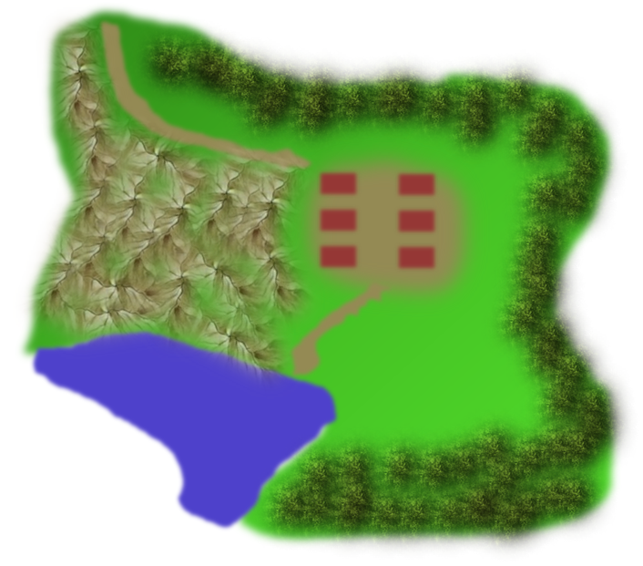Camp Wonashuqhaklam
Once the player assumes the role of Casey, text appears off to the side of the screen, showing controls such as how to jump, interact with things, and how to use the slingshot. The player is given the option of wandering around the camp and striking up conversation with various other scouts by pressing the interact button. Some of these scouts are apathetic towards what has occurred, whereas others are losing their minds, such as the counselor in charge of planning the trip, who faints after the player speaks to him.
After the player is finished speaking to fellow scouts, they are directed along a path leading away from the camp. There is an onscreen notification that states the player has a map and shows how to access it. The map will only clearly display the areas that the player has already travelled to and the other areas will remain blank until discovered. There is a fire danger sign along the trail pointing in the direction of the path and it indicates “low fire danger.” Onscreen text indicates that fire danger signs will occur near new locations and indicate the difficulty of those areas by their “fire danger.” It is also stated that the wind will blow a trail of leaves in the direction of main story locations, allowing the player to choose whether they want to further the main story or choose another route toward side quests. A final line of text tells the player that they can always look at the treetops for smoke from a campfire and find important areas. If the player looks up, they will see smoke in the direction of the next location. As the player walks down the trail, the sun begins to go down and the skies get cloudy.
After a short walk along the trail, Casey comes to a rundown camp. The brush is overgrown and there is a lone cabin with green overgrowth all along the walls and roof. Once the player walks inside the cabin, it begins to rain heavily outside and the player is no longer able to open the door. While exploring the inside of the cabin, the player will notice a locked cabinet. Further investigation of the cabin leads the player to find a key in the bathroom. When Casey returns and unlocks the cabinet, he finds a bunch of suspicious items including a hockey mask and a machete. At this moment, another cutscene plays:
The camera is on Casey as he rummages through the cabinet when a voice is heard:
"You know..."
Camera pans quickly to the entrance of the cabin, except now there's a dark silhouette of a man standing in the doorway. He continues
"...it's impolite to invite yourself into another man's house"
Lightning strikes and a loud crack of thunder is heard. The man closes the door behind him and begins to walk towards Casey, who is now cowering with his back against the wall. Camera zooms in on Casey’s face from the side and the man’s face slowly slides into frame.
"What are you doing out here kid?"
The name looks at Casey's name tag
“Casey from Camp Wonashuqhaklam. Well it’s nice to meet you Casey. I’m Caleb...Wonashuqhaklam? Why does that sound so familiar? Oh yea, word around the woods is that there was a plan to infiltrate your camp and steal all your goodies.”
Casey's fear turns to anger at the mention of this plan
"Ohhhhh so that's why you're out here, huh? Somebody stole all the goodies and little ole you is on a quest for revenge, is that it?"
Caleb looks away in remembrance of something
“Ya know, a long time ago I was actually in the same position as you. I used to be a happy little camper. We all were. That all changed when someone snuck in and took everything. Everyone lost it and nobody ever found out who did it. Lord knows, I tried to. But it wasn’t enough. I was too oblivious and I wasn’t strong enough on my own. The failure that I faced was too much for me to handle at the time and I’ve been wandering these woods ever since. You know what, Casey? I’m going to help you. I wish I could tell you who did it but I honestly have no idea. What I can do is teach you how to not just survive out in these woods, but how to gain allies, how to get stronger...strong enough to do what I could not.I should probably start off by saying that there's plenty of weird happenings in these woods that most people don't stay around long enough to notice. Talking animals, UFOs...are you familiar with UFOs kid? Well they aren't fun. My point is, you’re going to have to know how to defend yourself. I hate to encourage violence but do you have anything useful to defend yourself out there?”
Casey reaches his hand in his pocket and awkwardly holds his slingshot up in the air with a dumb smile on his face.
“That’s...that’s it? We’ve gotta fix that. Follow me.”
Casey follows Caleb into a room that was once locked and there is a crafting bench on which Caleb throws his backpack. The cutscene ends.
The player is now given control of the crafting menu and Caleb’s voice can be overheard.
“Every fire a marshmallow gun? Sure, it doesn’t sound like the most practical weapon for surviving out in the wild but you would be surprised at how powerful these things can be. I’ve got a bunch of pieces of pvc lying around and a few blueprints of some basic marshmallow guns to start from so let’s get started.”
Text hints let the player know the basic setup of the crafting menu. The player is able to start from a basic marshmallow gun or start from scratch and customize it to hold more ammo (marshmallows) or attach more air tank ports for higher damage/range. After the player constructs their first gun and moves to the visual customization screen, Caleb gives more tips.
“You’ll have to keep an eye out for jars of marshmallows and air tank canisters in the surrounding areas to power this bad boy. If you want, you can look for different colored berries to add some neat designs to your gun. Sure it doesn’t increase your chances of survival but hey, at least you’ll go down in style! Just whatever you do, don’t eat the berries; there’s no telling what effect they’ll have on you. Come to think of it, I think the night I ate the red berries was the same night I had that not-so-friendly encounter of the fourth kind...never mind that. Anywho! You can also find other blueprints for new gun models and candy attachments that will be sure to pack a sweet punch. Here’s some blueberries to start out with.”
After the player finishes customizing the gun they made, Caleb invites Casey outside to try testing his shooting skills. The player can then follow Caleb outside (where it is still raining, although not as hard as before) to a patch of dummies made of sandbags with poorly drawn faces on them.
“Let’s try targeting different parts of enemy bodies to see the differences in damage and effects.”
Text pops up prompting the player to shoot the dummies in the center mass five times. After the player completes the task Caleb comments.
“Nice shot, kid! Shooting marshmallows at an enemy’s chest isn’t the most effective way in bringing them down but sooner or later, it’ll get the job done. Now let’s try something else.”
Text appears, telling the player to aim for the head or limbs of the dummies and to make five of these shots. The first four make a hard impact and then the fifth splatters upon impact, covering the extremity that was targeted.
“Wow, you’re really good at this! Shooting at the arms, legs, head, or tentacles in some cases, will slow an enemy down much more quickly than a body shot will. On top of that, there is a greater chance that not only will the marshmallow make contact, but that it might burst and stick to the enemy! Obviously, a marshmallow that sticks to the face will blind and confuse the enemy and one that sticks to a limb will make that limb unusable for some time. It won’t work on everything out here, but it’s worth a shot. Now let’s try for something even more powerful.”
Text appears, telling the player that by pressing another button, they may throw a “marshmallow bomb.” The player is told to throw two marshmallow bombs at the dummies.
“That’s something that’ll make somebody second guess messing with you. Marshmallow bombs are a way to stick multiple enemies to a certain spot on the ground. On stronger enemies, the effects won’t last as long but it should give you enough time to get a few good shots in. Keep practicing if you’d like but remember that marshmallows are limited and you’ll have to find more. Meet me inside when you’re ready for the next step in your training.”
The player may continue shooting the dummies or explore the immediate area but once the player returns to the inside of the cabin, they can interact with Caleb for the next challenge.
“Now as you may have already gathered, the forest is not much of a straightforward place and there is almost always more than what you immediately perceive. It can be a tricky place but there’s nothing a strapping young lad such as yourself can’t overcome. Follow me.”
The player follows Caleb into a very large room; one that looks as though it couldn’t physically fit inside the cabin. The only objects in the room are 12 large statues and a red door on the other side as shown in the diagram below.
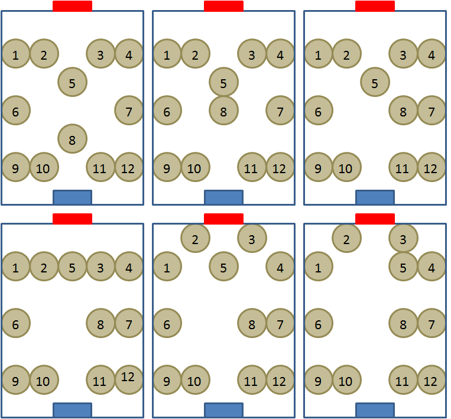 Initial Setup (TopLeft) to Final Solution (Bottom Right). Players start from the blue door.
“Casey. I want you to simply find a way to open that red door.”
Texts appears and states that the player may push the statues but they cannot pull them back. Once the player has navigated to the red door and opened it, Caleb congratulates Casey.
“You did it! I knew you had it in ya! As you explore the camps and other locations in the surrounding forest, there will be plenty of areas that aren’t so easy to get into and it will take a keen eye and great intuition to figure out ways into secret areas. There’s no telling what kind of good stuff you’ll find out there so be on the lookout.”
Another cutscene plays
Caleb can be seen over Casey’s shoulder
“Now that you know the basics, I’d say the first step in your path to retribution is to start at your camp and look for clues that tell you exactly who committed this atrocity and where they’ve transported your camp’s goodies. To help, I’m going to give you something more powerful than anything you’ve ever seen; something that gives you the kind of power that even gods are jealous of.”
Caleb takes off his backpack, sets in on the ground, and kneels behind it. The camera closes in on the backpack as Caleb reaches his hand inside. He pulls out a badge with a magnifying glass on it. The camera pans back out to show them both standing there.
“This is the Ace Detective scout badge. The bearer of this badge has not only a heightened sense of sight and hearing but also a heightened sense of smell. There’s nothing that he or she can’t sniff out. It’ll help you figure out where and who we’re looking for.”
Caleb pins the badge to Casey’s sash, to which Casey smiles.
“This isn’t the only badge there is, by the way. As you complete tasks for myself and others out there, we’ll throw a badge your way that either gives you new skills or just adds to the list of accomplishments displayed on your sash. I know this must sound weird but believe me when I say that there are also animals out there that need your help too. Not all of them, but some. Who knows, maybe they also have some powerful badges to give to you. So ask questions first but be very careful when confronting animals and humans alike and be ready for anything. You know that age old question, ‘If a bear chases you, do you run, play dead, or shoot it in the face with a marshmallow gun?’ You definitely wanna go with that last option if you ask me. Anyways, I know this is a lot of information to take in but lucky you, I have put together a survival guide of things that I wish I had known when I was in your position. Some of the things in this book were written by me as I experienced them and others are tips that have been around since the dinosaurs went to summer camp if you catch my drift. Unfortunately, I've been all over these woods and even more unfortunate is that I've lost pages of the guide along the way. Some very important ones actually. Hopefully you can find them and put them back.”
Caleb looks in the guide before giving it to Casey, blushes, and then tears a page out and throws to the side.
“It's a good thing I didn't lose certain pages out there. If you ever forget anything I've told you, it's always there for you to readdress in this guide."
Caleb hands the guide to Casey.
“Well, what are you waiting for? There’s somebody out there making off with the goodies remember?! We aren’t gonna stand for this are we?! Go find out who did this and where they went and come back to me if you need any help.”
Determination washes over Casey face and he starts to run out the door.
“Oh! By the way, if you see a guy covered in white fur who’s got a great smile and legs for days...tell him I said hi.”
Casey gives a confused look, shrugs and runs on out the door. The cutscene ends.
Once the player gets back to Camp Wonashuqhaklam, text notifies the player to search around the cabin where most of the goodies were stored. Around this cabin, there are three sets of tracks. Only one track will lead the player along the path out of the camp in the correct direction. One of the other tracks will lead to the edge of the lake. If the player walks up to the lake, they will see the top of a creature’s head staring back at them from the center of the lake and text will pop up, notifying the player that they currently do not have the ability to swim. The second incorrect set of tracks will lead the player toward the outskirts of the camp, which will seem blocked by bushes. When they get close to the bushes, pairs of eyes will peer back at them and they will hear growling. If they decide to continue through the bushes anyway, the growling will grow louder the farther they walk in and all the while, the player will not be able to see Casey through the plantlife. At a certain point the growling stops and we hear a bear roar. The screen will go black and then when it fades back, Casey will be sprawled out on the ground with stars spinning around his head. Once the player gets back up and they choose the correct set of tracks, they will be able to follow them out of the camp and along another trail. As the player follows the trail, they will come across other clues such as women-size shoes, bubblegum wrappers, cookie crumbs, etc. At a certain point not too far down the trail, there is a large dirt clearing and as the player enters this clearing, a cutscene begins.
The camera focuses on Casey from the front as he walks into the clearing, looking at the ground. He stops in his tracks and his eyes get wide. The camera moves to his point of view and we see at first a small shoe print. As the camera pans up, we see that right in front of this step is a very large animal print, almost two times the size of Casey’s face. We hear a couple thuds before the camera pans up to show a very large Grizzly bear peering down at Casey at very close range. The camera shows the view of Casey and the bear from the side and we see that Casey is stricken with fear. The bear lets out a loud roar and Casey runs back in the direction he came. The opening through which he walked into this clearing is seen closing up due to vines actively stretching from bush to bush. Casey’s fear fades from his face and he quickly turns back around with his marshmallow gun in hand. The bear begins to charge at Casey and the cutscene ends.
As the player fights against the bear, the bear attacks in a variety of ways, including charging directly at the player, climbing up a tree and pouncing back down on the player, and letting out a roar that causes pine cones to fall from trees and land on Casey’s head. Casey can fight back by either shooting the bear with his marshmallow gun or slingshot and also by employing the use of environmental elements. These include shooting down beehives that will get stuck on the bear’s head if it is a direct hit or otherwise cause bees to swarm the bear for a period of time. The player can also stand in front of trees that are on the edge of the clearing and trick the bear into charging into them and hurting itself. Once the bear has taken enough damage, it will let out a groan and fall on its butt as a cutscene begins.
The bear is seen sadly licking the sticky marshmallow off of its fur. As Casey triumphantly walks past it, he now feels bad for the bear and turns away from the camera, seemingly crafting something. When he turns back around, he’s holding a birdhouse made out of pinecones. As he hands it to the bear, a bird flies into it and starts happily chirping as it looks back and forth between Casey and the bear. The bear smiles and Casey smiles back as the cutscene ends.
The player regains control of Casey and the bear can be seen off to the side of the clearing, playing with it’s new birdhouse. The vines retract from the opening in the trail and the player is able to continue the search.